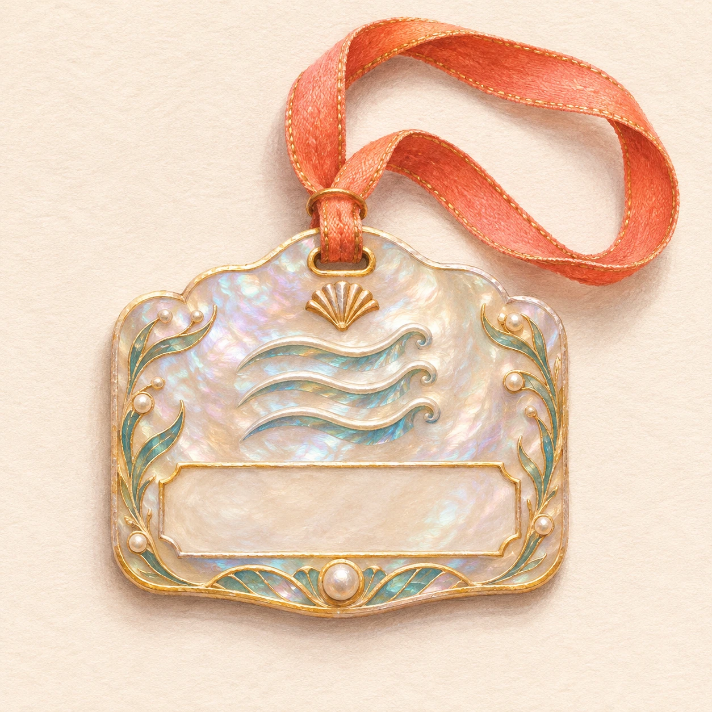
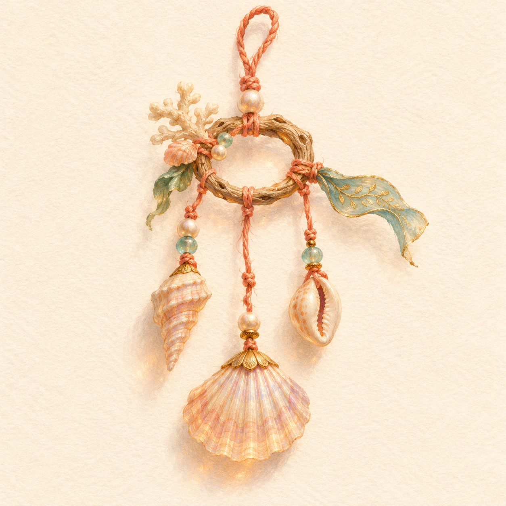
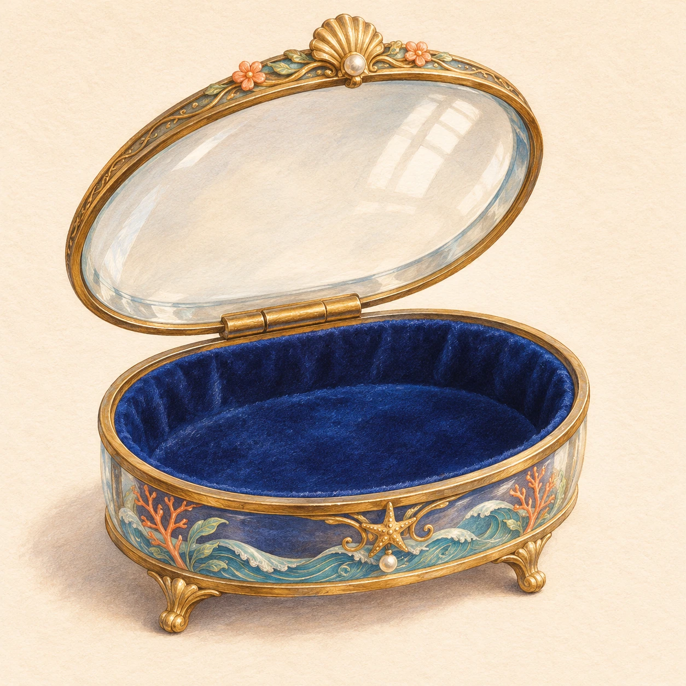
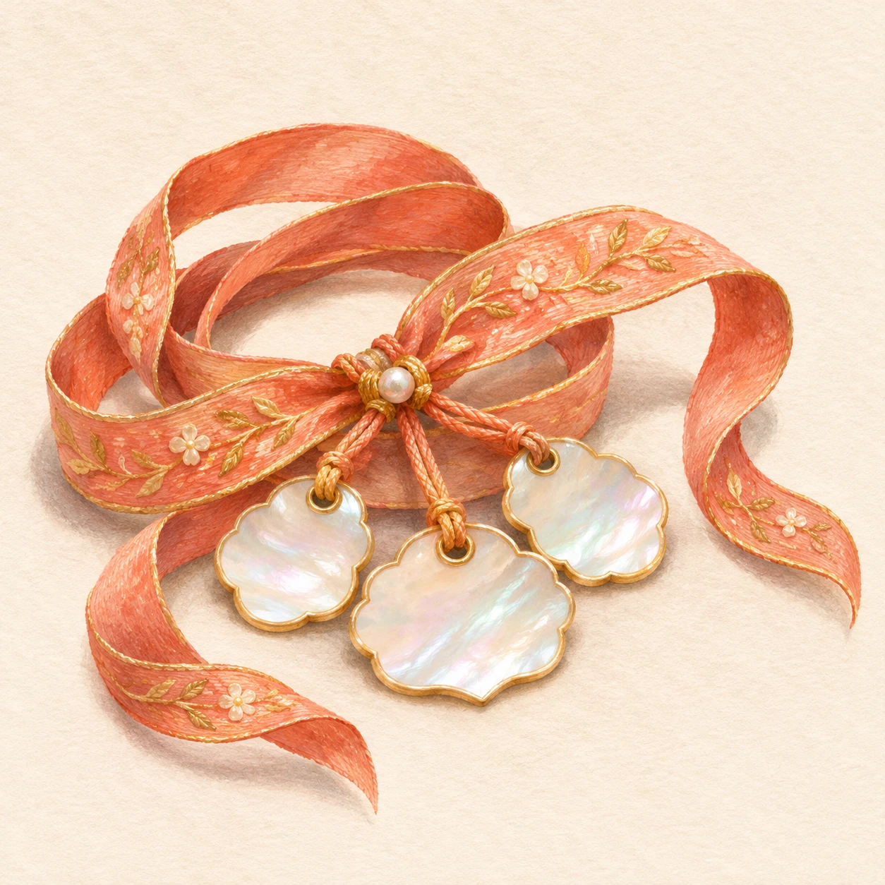
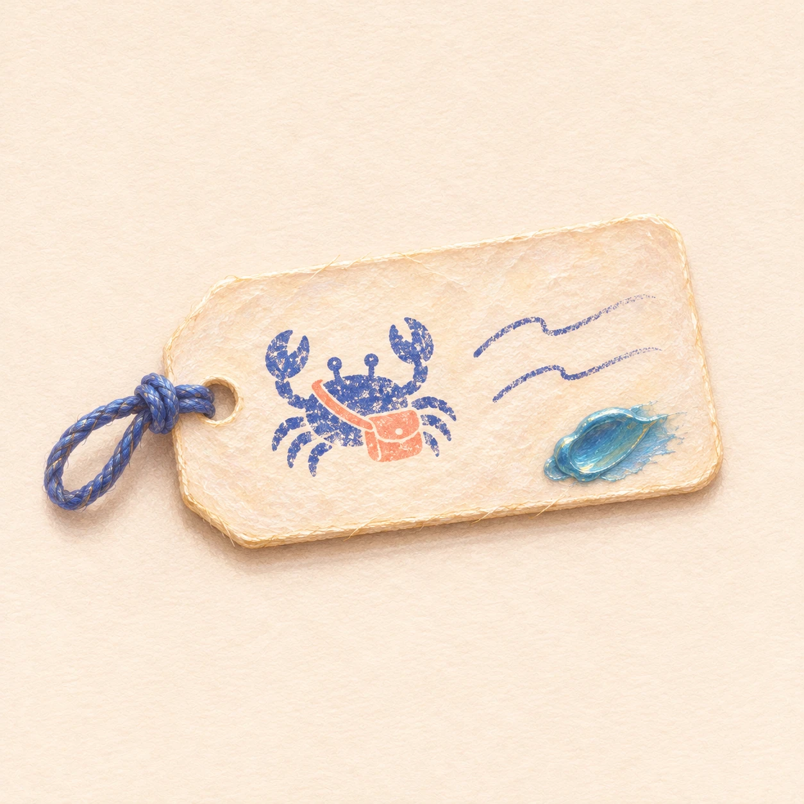
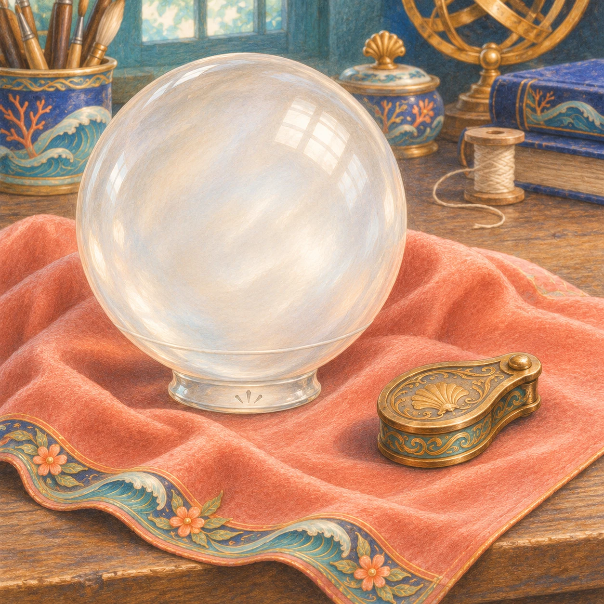

Вечер 1
Приглашение услышать город
Назовите вещь, которую герой взял с собой, и маленькую общую историю с другом.
Открыть отдельную карточкуПоказывайте отдельную карточку в момент находки. Указанный вечер — ориентир, не запрет на раннее открытие. Полный каталог раскрывает тайны. Карточки можно распечатать из браузера.
Назовите вещь, которую герой взял с собой, и маленькую общую историю с другом.
Открыть отдельную карточкуСравните карточку с тем, что действительно видите. Подпись, предмет и ваше предположение — разные источники.
Открыть отдельную карточкуНайдите сегодняшнюю строку. Какие пути закрыты, когда откроются и каким путём вы пойдёте сейчас?
Открыть отдельную карточкуПоложите рядом известные факты. Какой вывод требует проверки? Последующие отметки добавляйте только после находки.
Открыть отдельную карточкуБирка даёт адрес. Что ещё нужно, чтобы узнать содержимое и право на него?
Открыть отдельную карточкуПопробуйте повторить ритм стуком или укажите одинаковые места. Выступать голосом необязательно.
Открыть отдельную карточкуСравните с журналом Веллы. Что совпадает, кроме слов? Как другой человек сможет сам послушать оба звука?
Открыть отдельную карточкуОтделите честно сделанную копию от того, как её могли использовать позже.
Открыть отдельную карточкуНазовите две независимые проверки. Красота сама по себе не доказывает подлинность.
Открыть отдельную карточкуЭто правило вымышленного Перламутра. Кому вы покажете эту строку и когда?
Открыть отдельную карточкуВыберите одну незаметную работу и вообразите человека, который её делал. Не надо придумывать за него согласие на новое использование записи.
Открыть отдельную карточкуЭто уже сохранённый звук с репетиции. Что он меняет в вашем представлении о том дне?
Открыть отдельную карточкуНайдите в календаре ближайшую звёздочку. Сколько времени осталось и каким путём туда можно будет пройти?
Открыть отдельную карточкуКаждый выбирает свою роль. Решите заранее, что делать, если ваша часть не удалась: торги не ждут.
Открыть отдельную карточкуЗапишите или нарисуйте: где я стоял; что действительно видел; как назвал этот образ. Придумайте вместе имя этой волне для лодочного журнала Норы.
Открыть отдельную карточкуВыберите путь. После каждого действия ведущий называет время. Можно разделиться.
Открыть отдельную карточкуРешите, кто записывается на осмотр, кто стоит у кафедры, кто у подставки. Сколько ударов у вас есть?
Открыть отдельную карточкуНазовите или покажите удобный способ. Право на отдых не нужно заслуживать.
Открыть отдельную карточку
Эльма предлагает общий образец в первом вечере; отдельные пропуски выдаёт каждому желающему.
Открыть предмет
Дора одалживает её после спокойного сравнения образцов; вернуть или договориться о подарке.
Открыть предмет
Остин предлагает после исследования звука; принимать подарок необязательно.
Открыть предмет
На рынке продавец предлагает его за помощь с опрокинувшейся стойкой или обычную цену по решению ведущего.
Открыть предмет
Ирис приносит пустую ленту в зал торгов на своей папке и в последнем вечере предлагает повесить её у Жемчужины; надписи делают игроки, если хотят.
Открыть предмет
В начале — опечатанный лот № 7 на складе Наутилуса; открывают его только под лампой зала в вечер торгов. У кого она окажется, решают действия героев на торгах.
Открыть предмет
Нора отдаёт календарь героям во втором вечере, в каюте лодки.
Открыть предмет
Висит на ящике у выхода в Нижнюю галерею в восьмом вечере; её можно взять с разрешения Бубо или оставить на месте.
Открыть предмет
Стоит в музейной витрине с первого вечера; в девятом её выносит курьер, и герои отбивают её у Южного шлюза, если успевают до полудня.
Открыть предмет